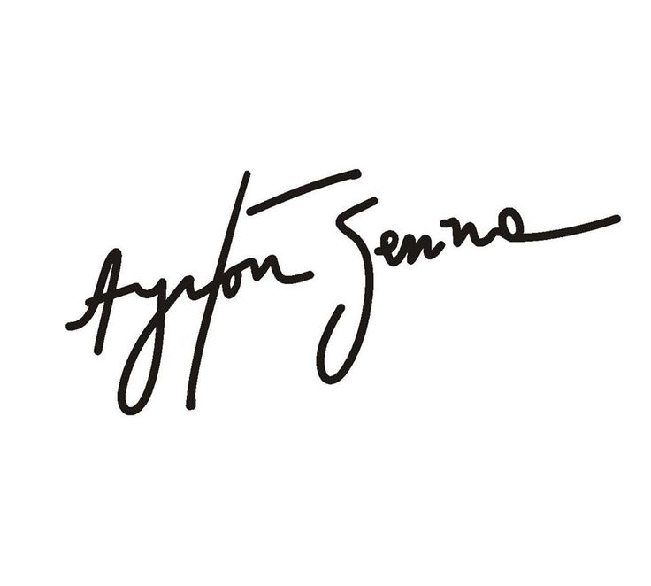

Sobre a trajetória
Ayrton Senna da Silva.
(São Paulo, 21 de março de 1960 — Bolonha, 1 de maio de 1994) foi um piloto de Fórmula 1, empresário e filantropo brasileiro. Senna foi campeão da categoria de piloto três vezes, em 1988, 1990 e 1991. Começou sua carreira competindo no kart em 1973 e em "carros de fórmula" em 1981, quando venceu as Fórmulas Ford 1600 e 2000. Em 1983 alcançou o título de campeão do Campeonato Britânico de Fórmula 3 batendo vários recordes. Seu desempenho impulsionou sua ascensão à Fórmula 1, fazendo sua primeira aparição na categoria no Grande Prêmio do Brasil de 1984 pela equipe Toleman-Hart. Em sua primeira temporada, Senna pontuou em cinco corridas, fechando o ano com treze pontos e a nona posição na classificação geral dos pilotos. No ano seguinte, ingressou na Lotus-Renault, pela qual venceu seis grandes prêmios ao longo de três temporadas.
Em 1988, juntou-se ao francês Alain Prost na McLaren-Honda, com o qual teve grande rivalidade. Senna venceu oito etapas daquela temporada e sagrou-se campeão mundial pela primeira vez. Após a polêmica final de 1989 com Prost que resultou na segunda colocação do torneio, ele retomou o título em 1990, vencendo novamente na temporada seguinte, tornando-se o piloto mais jovem a conquistar um tricampeonato na Fórmula 1 até então. Em 1993, Senna foi vice-campeão, vencendo cinco corridas. Transferiu-se para a Williams em 1994, onde disputou apenas três etapas, a última sendo o Grande Prêmio de San Marino, onde se acidentou e morreu. Ao todo, Senna participou de 161 grandes prêmios na Fórmula 1, alcançando 41 vitórias, 80 pódios, 65 pole positions e 19 voltas mais rápidas. -Fonte: Wikipédia
- 

On Bording in Mônaco
Se você quer ser bem sucedido, precisa ter dedicação total, buscar seu último limite e dar o melhor de si. - Ayrton Senna
Em maio de 2017, o governo do Principado de Mônaco, através do seu príncipe Albert II, prestou uma série de homenagens a Ayrton Senna na semana do Grande Prêmio de Mônaco de Fórmula 1. A primeira delas foi a inauguração de uma escultura com duas placas na curva Fairmont, onde fica o hotel de mesmo nome, que igualmente recebeu uma homenagem ao tricampeão mundial; uma suíte temática batizada com o nome do piloto. Seguiram-se uma exposição com itens especiais usados pelo piloto durante a carreira no Yatch Club de Mônaco e no Paddock Club. O pintor Armin Flossdorf também homenageou o brasileiro fazendo seis pinturas ao vivo, uma para cada vitória do brasileiro em Mônaco. Também foi exibida para a imprensa internacional a nova coleção especial com roupas, acessórios e itens colecionáveis da Ayrton Senna Shop, bem como a primeira versão de uma moeda de euro comemorativa com o rosto de Ayrton Senna. Uma outra homenagem especial aconteceu nos telões espalhados pelo circuito de Monte Carlo com um vídeo sobre Senna. - Fonte: Wikipédia
Legado
A rede de comunicação estatal britânica BBC elegeu o brasileiro Ayrton Senna como o melhor piloto de Fórmula 1 da história. "Provavelmente nenhum piloto da Fórmula 1 tenha se dedicado mais ao esporte e dado mais de si mesmo em sua rígida busca pelo sucesso. Era uma força da natureza, uma combinação incrível de muito talento e, em alguns casos, uma determinação espantosa", aponta o texto publicado no site da BBC. Em 2012, o SBT realizou o programa O Maior Brasileiro de Todos os Tempos para eleger a maior personalidade do país. Ayrton Senna ficou entre os seis mais votados, primeiro entre os esportistas.
A reforma do autódromo de Interlagos em 1990, que teve uma mudança radical no traçado, foi proposta para seguir as regras de limites de distância de um circuito da FIA, e uma grande curva inclinada foi sugerida para ligar a reta dos boxes à curva do sol. Ayrton propôs um "S" que ligasse as duas retas, daí o nome de "S do Senna", pelo design do tricampeão, e não somente uma homenagem a ele. Com a morte de Ayrton Senna, novas normas de segurança foram implementadas para a F1. Novas barreiras, curvas redesenhadas, altas medidas de segurança e o próprio cockpit dos pilotos foram as mudanças feitas na F1, ligadas diretamente à sua morte. -Fonte: Wikipédia/video:insta.SennaGlobal.
Nos acompanhe
Fale conosco